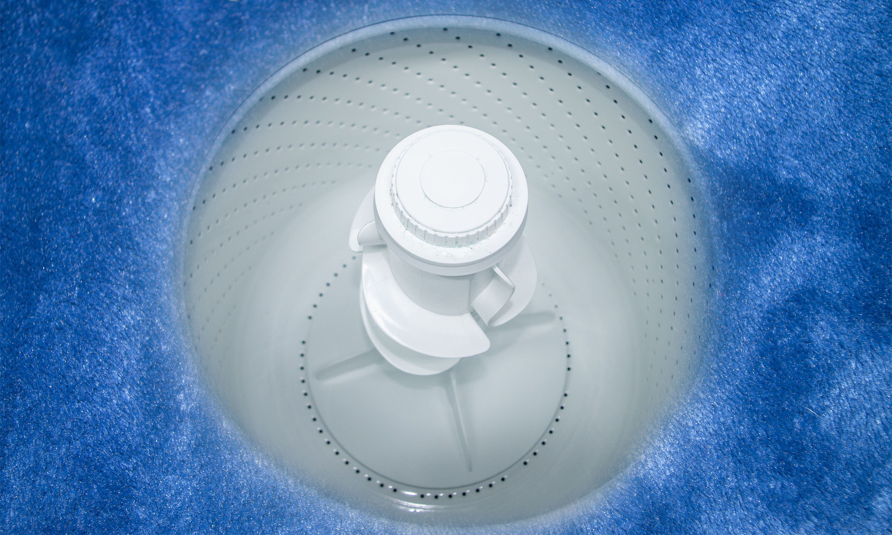

One thing that makes the journey to basement so perilous is the Samsung Whirlpool. This is a massive whirlpool that appears once a week near the dock on Basement. It’s generally predictable, but there are some weeks it comes early or not at all. Travel to Basement is generally scheduled for the middle of the week, when the whirlpool is least likely to form. No one lives in Basement, but travelers, researchers, and tourists visit for various reasons during the summer when the temperatures are above freezing.